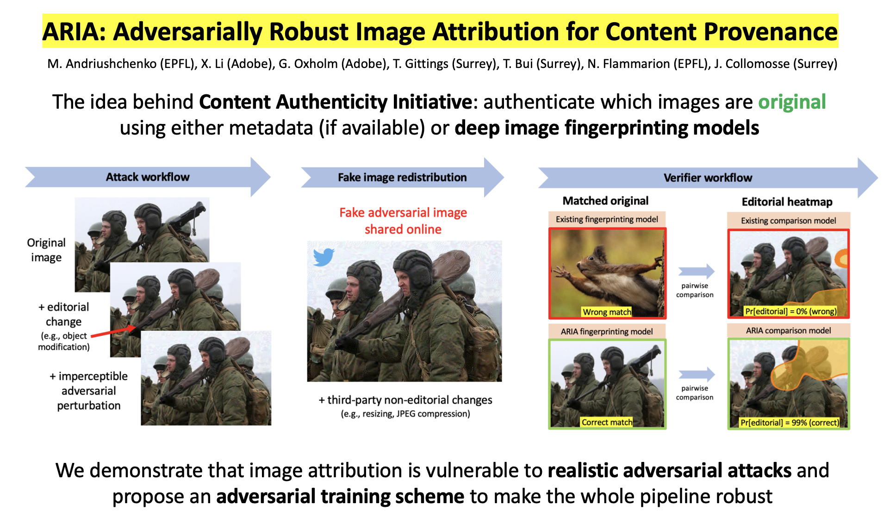

Maksym Andriushchenko

Email ‚ÄÉ Substack ‚ÄÉ X ‚ÄÉ Scholar ‚ÄÉ GitHub ‚ÄÉ CV
üëã Short bio. I am a principal investigator at the ELLIS Institute T√ºbingen and the Max Planck Institute for Intelligent Systems, where I lead the AI Safety and Alignment group. I also serve as chapter lead for the new edition of the International AI Safety Report chaired by Prof. Yoshua Bengio. I collaborate closely with industry: I have participated in red-teaming efforts for OpenAI and Anthropic models, and the benchmarks I co-authored have been used by DeepMind, xAI, and Anthropic / UK AI Safety Institute. I obtained my PhD in machine learning from EPFL in 2024, supported by the Google and Open Phil AI PhD Fellowships. My PhD thesis received the ELLIS PhD Award and Patrick Denantes Memorial Prize for the best thesis in the computer science department at EPFL.
üì£ I‚Äôm hiring! If you are interested in working with me, please fill out this Google form. I will review every application and reach out if there is a good fit. I‚Äôm hiring exceptional candidates in all areas, but I‚Äôm particularly looking for:
- one postdoc with a proven track record in AI safety,
- PhD students with a strong computer science background and ideally experience in cybersecurity, interpretability, or training dynamics (apply to CLS, ELLIS, IMPRS-IS by November 2025 to start in Spring–Fall 2026),
- master’s thesis students (if you are already in Tübingen or can relocate to Tübingen for ~6 months),
- mentees for the Summer 2026 MATS cohort (apply directly via the MATS application portal).
üîç Research topics. We focus on developing algorithmic solutions to reduce harms from advanced general-purpose AI models. We‚Äôre particularly interested in alignment of autonomous LLM agents, which are becoming increasingly capable and pose a variety of emerging risks. We‚Äôre also interested in rigorous AI evaluations and informing the public about the risks and capabilities of frontier AI models. Additionally, we aim to advance our understanding of how AI models generalize, which is crucial for ensuring their steerability and reducing associated risks. For more information about research topics relevant to our group, please check the following documents: International AI Safety Report, An Approach to Technical AGI Safety and Security by DeepMind, Open Philanthropy‚Äôs 2025 RFP for Technical AI Safety Research.
üìù Research style. We are not necessarily interested in getting X papers accepted at NeurIPS/ICML/ICLR. We are interested in making an impact: this can be papers (and NeurIPS/ICML/ICLR are great venues), but also open-source repositories, benchmarks, blog posts, even social media posts‚Äîliterally anything that can be genuinely useful for other researchers and the general public. For example, our JailbreakBench and AgentHarm benchmarks were not only published at NeurIPS and ICLR but also used by DeepMind, xAI, and Anthropic / UK AI Safety Institute for evaluation of their new frontier LLMs.
üåü Broader vision. Current machine learning methods are fundamentally different from what they used to be pre-2022. The Bitter Lesson summarized and predicted this shift very well back in 2019: ‚Äúgeneral methods that leverage computation are ultimately the most effective‚Äù. Taking this into account, we are only interested in studying methods that are general and scale with intelligence and compute. Everything that helps to advance their safety and alignment with societal values is relevant to us. We believe getting this‚Äîsome may call it ‚ÄúAGI‚Äù‚Äîright is one of the most important challenges of our time. Join us on this journey!
AI Safety and Alignment Group
Group members:
- Ben Rank (PhD student)
- David Schmotz (PhD student)
- Jeremy Qin (PhD student)
- Jeanne Salle (PhD student, co-supervised with Sahar Abdelnabi)
- Alexander Panfilov (PhD student, co-supervised with Jonas Geiping)
- Hardik Bhatnagar (PhD student, co-supervised with Matthias Bethge)
- Yuchen Zhang (research intern)
- Jehyeok Yeon (research intern)
- Anietta Weckauff (research intern)
- Jonas Wiedermann-Möller (master’s thesis)
- Changling Li (master’s thesis)
- Derck Prinzhorn (master’s thesis)
- Lena Libon (master’s thesis)
Alumni:
- Joshua Freeman (master’s project at ETH Zurich → SWE Intern at Meta)
- Hao Zhao (master’s thesis at EPFL → PhD student at EPFL)
- Hichem Hadhri (master’s project at EPFL → Data Science Intern at Swisscom)
- Tiberiu Musat (bachelor’s project at EPFL → MSc student at ETH Zurich)
- Francesco d’Angelo (PhD project at EPFL → PhD student at EPFL, Google PhD Fellowship)
- Théau Vannier (master’s project at EPFL → Research Engineer at InstaDeep)
- Jana Vuckovic (master’s project at EPFL → Data Science Intern at Credit Suisse)
- Mehrdad Saberi (Summer@EPFL intern ‚Üí PhD student at University of Maryland)
- Edoardo Debenedetti (master’s project at EPFL → PhD student at ETH Zurich)
- Klim Kireev (PhD project at EPFL ‚Üí PhD student at EPFL, researcher at MPI-SP)
- Etienne Bonvin (master’s project at EPFL → Security Engineer at Global ID SA)
- Oriol Barbany (master’s project at EPFL → PhD student at UPC and EPFL)
selected publications
T. Kuntz, A. Duzan, H. Zhao, F. Croce, Z. Kolter, N. Flammarion, M. Andriushchenko. OS-Harm: A Benchmark for Measuring Safety of Computer Use Agents (NeurIPS 2025 Datasets and Benchmarks Track, Spotlight)
M. Andriushchenko, A. Souly, M. Dziemian, D. Duenas, M. Lin, J. Wang, D. Hendrycks, A. Zou, Z. Kolter, M. Fredrikson, E. Winsor, J. Wynne, Y. Gal, X. Davies. AgentHarm: A Benchmark for Measuring Harmfulness of LLM Agents (ICLR 2025)
M. Andriushchenko, F. Croce, N. Flammarion. Jailbreaking Leading Safety-Aligned LLMs with Simple Adaptive Attacks (ICLR 2025)
A. Zou, L. Phan, J. Wang, D. Duenas, M. Lin, M. Andriushchenko, R. Wang, Z. Kolter, M. Fredrikson, D. Hendrycks. Improving Alignment and Robustness with Circuit Breakers (NeurIPS 2024)
news
| Jun 19, 2025 | Check out three new papers: Capability-Based Scaling Laws for LLM Red-Teaming, Monitoring Decomposition Attacks in LLMs with Lightweight Sequential Monitors, and OS-Harm: A Benchmark for Measuring Safety of Computer Use Agents! |
|---|---|
| Mar 29, 2025 | An invited talk at the Large Model Safety Workshop (April 23) collocated with ICLR 2025 in Singapore. Honored to present my work alongside so many amazing speakers! |
| Feb 1, 2025 | Our works on LLM safety (circuit breakers and adaptive jailbreak attacks) have been featured in Forbes, Le Figaro, and 24 heures. |
| Jan 30, 2025 | Four papers accepted at ICLR 2025: AgentHarm, past tense jailbreaks, adaptive jailbreaks, and a comparison between in-context learning vs. instruction fine-tuning. |
| Dec 22, 2024 | Our paper Jailbreaking Leading Safety-Aligned LLMs with Simple Adaptive Attacks is featured on EPFL’s main page, in the largest Swiss newspapers (SwissInfo, Le Temps, Blick Digital, Blick Suisse), and other media [1, 2, 3, 4, 5]. |
| Nov 4, 2024 | An invited talk at the UK AI Safety Institute about Jailbreaking Leading Safety-Aligned LLMs with Simple Adaptive Attacks, where we achieved 100% jailbreak success rate on all major LLMs, including GPT-4o and Claude 3.5 Sonnet. |
| Oct 14, 2024 | Our new benchmark AgentHarm: A Benchmark for Measuring Harmfulness of LLM Agents is available online (collaboration between Gray Swan AI and UK AI Safety Institute). We need reliable evaluations for alignment of LLM agents equipped with external tools, especially in the adversarial setting. |
| Sep 26, 2024 | Three papers accepted at NeurIPS 2024: Why Do We Need Weight Decay in Modern Deep Learning?, Improving Alignment and Robustness with Circuit Breakers, and JailbreakBench (Datasets and Benchmarks Track). |
| Jul 19, 2024 | Going to ICML 2024 in Vienna to present Long Is More for Alignment at the main track and also Adaptive Jailbreaking Attacks and JailbreakBench at the NextGenAISafety workshop. Feel free to ping me if you want to chat about robustness and generalization in LLMs! |
| Jul 17, 2024 | Our new paper, Does Refusal Training in LLMs Generalize to the Past Tense?, is available on arXiv now. See my Twitter/X thread for summary! |
| Jun 7, 2024 | Incredibly excited about our new paper Improving Alignment and Robustness with Short Circuiting (see the Twitter/X thread from Andy for a summary)! Effective defenses against jailbreaking attacks on LLMs may be much more feasible than previously thought. |
| May 31, 2024 | Our new paper Is In-Context Learning Sufficient for Instruction Following in LLMs? is available online (see a Twitter/X thread for a summary). We study alignment of base models, including GPT-4-Base (!), via many-shot in-context learning. I.e., no fine-tuning whatsoever, just prompting - how far can we go? Check the paper for more details. |
| May 2, 2024 | Our recent paper Long Is More for Alignment: A Simple but Tough-to-Beat Baseline for Instruction Fine-Tuning is accepted at ICML 2024! See this Twitter/X thread for a follow-up discussion. And see you in Vienna! |
| Apr 2, 2024 | Our new paper Jailbreaking Leading Safety-Aligned LLMs with Simple Adaptive Attacks is available online (see a Twitter/X thread for a summary). We show how to jailbreak basically all leading safety-aligned LLMs with ≈100% success rate. |
| Mar 28, 2024 | Our new benchmark JailbreakBench: An Open Robustness Benchmark for Jailbreaking Large Language Models is available online (see a Twitter/X thread for a summary). We prioritize reproducibility, support adaptive attacks, and test-time defenses. |
| Feb 15, 2024 | A talk at the Math Machine Learning seminar MPI MIS + UCLA about our paper A modern look at the relationship between sharpness and generalization. Slides: pdf, pptx. |
| Feb 7, 2024 | Our new paper Long Is More for Alignment: A Simple but Tough-to-Beat Baseline for Instruction Fine-Tuning is available online (see a Twitter/X thread for a summary). We need simple methods to better understand alignment.  |
| Jan 16, 2024 | Layer-wise Linear Mode Connectivity got accepted to ICLR 2024! |
| Jan 5, 2024 | A talk at the Deep Learning: Classics and Trends (organized by ML Collective) about our recent work Why Do We Need Weight Decay in Modern Deep Learning? (slides) |
| Dec 21, 2023 | A new short paper Adversarial Attacks on GPT-4 via Simple Random Search on how we can leverage logprobs for a black-box attack on the latest GPT-4-turbo (see a Twitter/X thread for a summary). |
| Dec 10, 2023 | Going to NeurIPS’23 in New Orleans. Feel free to ping me if you want to chat! |
| Nov 14, 2023 | A talk at the Deep Learning and Optimization Seminar (organized by faculties from Westlake University, City University of Hong Kong, Peking University) about our recent work Why Do We Need Weight Decay in Modern Deep Learning? |
| Nov 9, 2023 | A talk at the University of Tübingen about our recent work Why Do We Need Weight Decay in Modern Deep Learning? |
| Oct 30, 2023 | A talk at the Efficient ML Reading Group (organized by TU Graz) about our recent work Why Do We Need Weight Decay in Modern Deep Learning? |
| Oct 23, 2023 | Excited to have participated in red teaming of OpenAI models as an external expert! I hope my findings will help improving the safety of their models/services. |
| Oct 9, 2023 | Our new paper Why Do We Need Weight Decay in Modern Deep Learning? is available online. Also check out our new preprint on layer-wise linear mode connectivity. |
| Sep 21, 2023 | Both Sharpness-Aware Minimization Leads to Low-Rank Features and Transferable Adversarial Robustness for Categorical Data via Universal Robust Embeddings got accepted to NeurIPS 2023! See y‚Äôall in New Orleans! üé∂üé∑ |
| Aug 23, 2023 | A talk at the ELLIS Mathematics of Deep Learning reading group about our ICML 2023 paper SGD with Large Step Sizes Learns Sparse Features. Slides: pdf, pptx. |
| Jul 23, 2023 | Going to ICML 2023 in Hawaii to present SGD with Large Step Sizes Learns Sparse Features and A Modern Look at the Relationship Between Sharpness and Generalization at the main track and Sharpness-Aware Minimization Leads to Low-Rank Features at a workshop. Feel free to ping me if you want to chat! |
| Jul 21, 2023 | A talk at the Tatsu’s lab group meeting at Stanford about our ICML 2023 paper A modern look at the relationship between sharpness and generalization. Slides: pdf, pptx. |
| Jun 5, 2023 | A talk at the Efficient ML Reading Group (organized by TU Graz) about our ICML 2023 paper A modern look at the relationship between sharpness and generalization. Slides: pdf, pptx. |
| May 30, 2023 | A talk at a mini-symposium of the 93rd Annual Meeting of the International Association of Applied Mathematics and Mechanics about our ICML 2022 and ICML 2023 papers on robustness/flatness in the parameter space. |
| May 26, 2023 | Our new paper Sharpness-Aware Minimization Leads to Low-Rank Features is available online! We investigate the low-rank effect of SAM which occurs in a variety of settings (regression, classification, contrastive learning) and architectures (MLPs, CNNs, Transformers). |
| May 5, 2023 | A talk at the Amazon Research Reading Group about our ICML 2023 paper A modern look at the relationship between sharpness and generalization. Slides: pdf, pptx. |
| Apr 25, 2023 | Both SGD with large step sizes learns sparse features and A modern look at the relationship between sharpness and generalization got accepted to ICML 2023! See you in Hawaii! üå¥ |
| Apr 12, 2023 | A talk at the Deep Learning and Optimization Seminar (organized by faculties from Westlake University, City University of Hong Kong, and Peking University) about our paper SGD with large step sizes learns sparse features. Slides: pdf, pptx. |
| Mar 13, 2023 | A talk at the OOD Robustness + Generalization Reading Group at CMU about our paper A modern look at the relationship between sharpness and generalization. Slides: pdf, pptx. |
| Feb 15, 2023 | Our new paper A modern look at the relationship between sharpness and generalization is available online! Do flatter minima generalize better? Well, not really.  |
| Dec 9, 2022 | A talk at the University of Luxembourg about our work with Adobe: ARIA: Adversarially Robust Image Attribution for Content Provenance. |
| Dec 1, 2022 | A talk in the ML and Simulation Science Lab of the University of Stuttgart about RobustBench and SGD with large step sizes learns sparse features. |
| Nov 28, 2022 | Going to NeurIPS’22 in New Orleans. Feel free to ping me if you want to chat! |
| Oct 28, 2022 | A talk at the ELLIS Mathematics of Deep Learning reading group about our ICML’22 paper Towards Understanding Sharpness-Aware Minimization. Slides: pdf, pptx. |
| Oct 12, 2022 | Our paper SGD with large step sizes learns sparse features is available online! TL;DR: loss stabilization achieved via SGD with large step sizes leads to a hidden dynamics that promotes sparse feature learning. Also see this twitter thread for a quick summary of the main ideas.  |
| Oct 8, 2022 | Recognized as one of the top reviewers at NeurIPS‚Äô22. Yay! üéâ |
| Sep 7, 2022 | A talk at Machine Learning Security Seminar hosted by University of Cagliari about our paper ARIA: Adversarially Robust Image Attribution for Content Provenance (available on youtube). |
| Sep 1, 2022 | Truly excited to be selected for the Google PhD fellowship and OpenPhil AI fellowship! |
| Jun 13, 2022 | Our paper Towards Understanding Sharpness-Aware Minimization got accepted to ICML’22! |
| Apr 1, 2022 | Our paper ARIA: Adversarially Robust Image Attribution for Content Provenance is accepted to the CVPR’22 Workshop on Media Forensics. One of (a few?) applications where \(\ell_p\) adversarial robustness is well-motivated from the security point of view.  |
| Mar 25, 2021 | A talk at the NLP club of Grammarly about our paper On the Stability of Fine-tuning BERT: Misconceptions, Explanations, and Strong Baselines (available on youtube). |